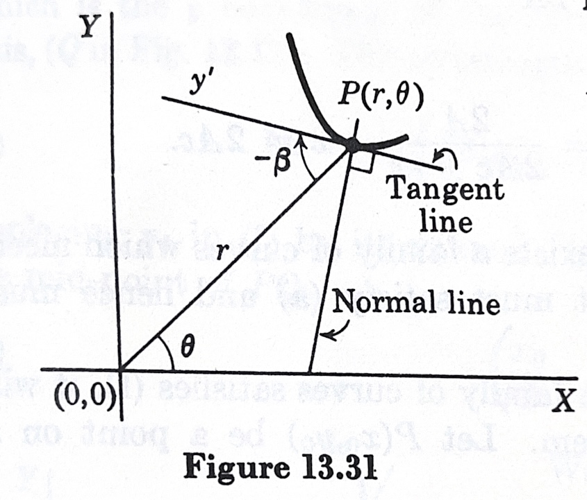

ODE应用
几何应用
极坐标下tangent line和radius line的夹角\(\beta\).

\[ \tan \beta=r\frac{d\theta}{dr} \]
Proof: click here
Trajectories
原则：\(末-初\)

Isogonal Trajectories \[ \tan \alpha=\frac{m_2-m_1}{1+m_1m_2},\quad \tan \beta=\frac{m_1-m_2}{1+m_1m_2} \]
Orthogonal Trajectories 1. Rectangular coordinates \[ y_1'y'=-1,\quad y'=-\frac{1}{y_1'} \]
- Polar coordinates

\[ \phi_1=\phi_2+\frac{\pi}{2} \] \[ \tan \phi_1=\tan(\phi_2+\frac{\pi}{2})=-\frac{1}{\tan \phi_2} \] \[ \tan \phi_2=r\frac{d\theta}{dr},\quad \tan\phi_1=-\frac{dr}{rd\theta} \]
实际问题
原则：两边同时定积分，下面是初值，上面是自变量
1. Dilution and Accretion
稀释和浓缩盐水，关键是设\(x=\text{溶液中盐在时刻t的质量}\)，表示出\(\Delta x\)
比如每单位时间流入浓度为6单位盐的盐水，流出3单位盐水
\[ \Delta x\approx 6\Delta t-\frac{x}{100}3\Delta t,\quad \frac{\Delta x}{\Delta t}\approx 6-0.03x \]
当流入流出速度不一致时，溶液体积变成\(100\pm 2t\)（差值为2的情况）
2. Interest
连续型的永续年金公式已经很熟悉了 \[ P=Ae^{rt} \] 跟以往不同，这次不是求解微分方程，而是倒过来把公式转化成微分方程（当然，更简单了） \[ \frac{dP}{dt}=rAe^{rt}=rP \] 例. ¥1多久才能翻倍？ \[ \int_{P=1}^2\frac{dP}{P}=r\int_{t=0}^tdt \]
3. Temperature \[ \frac{dT_B}{dt}=-k(T_B-T_M) \]
4. Decomposition 像放射性元素的分解 \[ \frac{dx}{dt}=kx \]